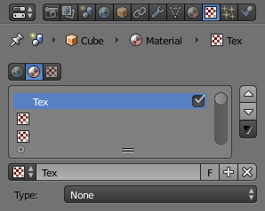

指定纹理¶
该页面只是介绍如何向纹理槽中添加新纹理。纹理的选项在 纹理面板 有详细说明.

纹理面板。¶
在非空纹理槽新建纹理数据块¶
选择一非空的纹理槽,然后点+按钮.
此操作将会执行两种操作:
It will create a new texture data-block, with a new name, by making a copy of the texture data-block assigned to the selected slot.
将该新建的纹理数据块指定给选定的纹理槽。
在非空的纹理槽中共享新纹理数据块¶
在非空纹理槽中共享纹理数据块
在菜单中选择一纹理指定给选择的纹理槽.这会就可以多个对象共用一纹理,此时会在纹理数据块处新增使用数量按钮